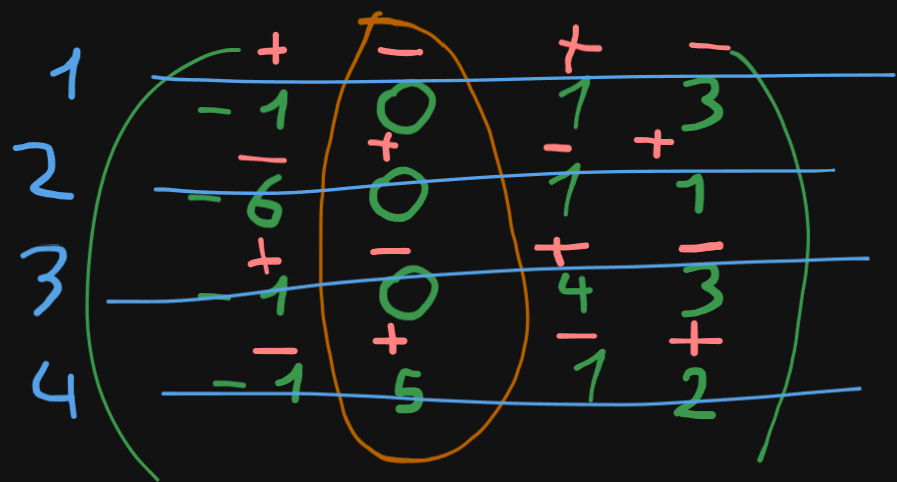
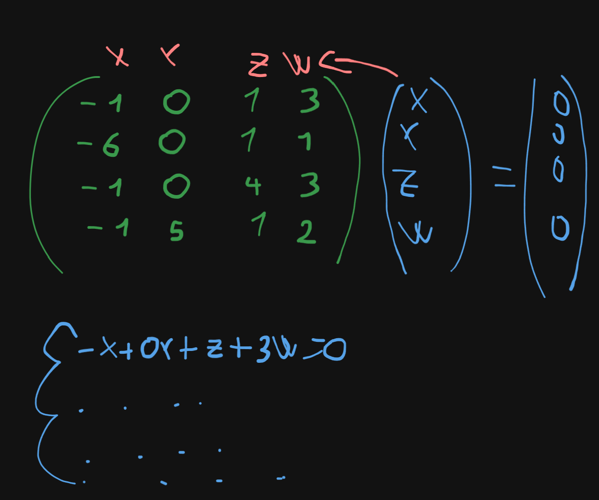
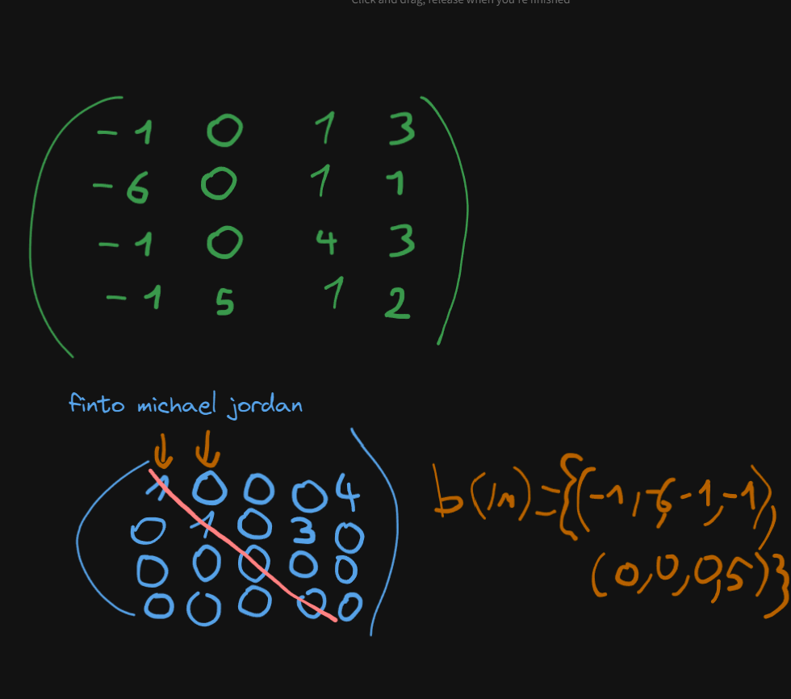
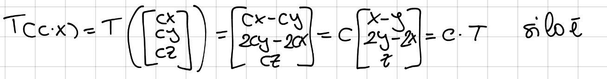

ESERCIZI SU MATRICI
Una matrice è composta da RxR con partenza colonna e arrivorighe
RANGO
numero di pivot dopo semplificazione di michael jordan
DETERMINANTE
distribuisci + - alternati facendo in modo che le colonne tra loro siano sempre diverse, prendi una serie di valori lineari in righe o colonne moltiplichi poi quei valori(con il laser) per il determinante della sotto matrice che ti si crea, quando arrivi a una matrice 2x2 applichi la place quindi fai condizioni per barare: se avevi due righe o due colonne uguali allora il det=0 oppure se hai una riga o una colonna full di zeri allora il det=0 
base KER o NUCLEO
prendi la matrice e te la semplifichi con il michael jordan poi moltiplichi con un vettore con le variabili che rappresentano ognuna una colonna e poni tutto uguale a 0, ti svolgi il tutto come se fosse un sistema, se hai delle variabili che non trovi devi metterle uguali a una lettera, successivamente scrivi il risultato così (0,0,1,1) se hai una lettera devi metterci il suo coefficiente 
base IMMAGINE
michael jordan, vedi dove sono i pivot e ti scrivi le colonne che c’erano originariamente 
dimensione IMMAGINE
è il rango
dimensione NUCLEO
n di colonne-dimensione(IMM) una trasformazione lineare da avrà 3 colonne e 5 righe.
POLINOMIO CARATTERISTICO
fai il determinante mettendo ad ogni pivot, senza fare michael jordan
AUTOVALORE
lo trovi facendo il polinomio caratteristico, alla fine dello svolgimento del determinante potresti incorrere in code simili a formule come ad esempio prendendo le trovi gli autovalori ovvero 4 e -2(doppio)
AUTOSPAZIO
per trovare l’autospazio devi applicare gli autovalori alle della matrice creata, successivamente fai il michael jordan e poi ti calcoli l’autovettore(come la base del nucleo) senza però cambiare le t in numeri e lasci le lettere e scrivi il tuo autospazio
AUTOVETTORE
sostituisci le lambda e fai come il calcolo del sistema per trovare la base del nucleo
MOLTEPLICITÀ o MEDIA GEOMETRICA E ALGEBRICA
fai il polinomio caratteristico, quante volte appare rappresenta la media algebrica
se fai n-rango hai la media geometrica, dove n è la partenza della matrice ovvero colonne
ogni lambda ha una media geometrica e algebrica a sè
DIAGONIZZABILE
devi fare il polinomio caratteristico, poi trovi le e le loro molteplicità, applichi le lambda ai pivot della matrice e fai il michael jordan, e scopri così il rango di quei singoli casi la media geometrica deve essere uguale da quella algebrica la media geometrica era n-rango dove n è la partenza(colonne) la media algebrica è il numero di autovalori che trovi(molteplicità) dopo aver fatto questi controlli devi fare la somma delle medie geometriche e deve essere uguale a n
INVERTIBILE
det diverso da 0 oppure rango=max oppure biunivoca
INVERSA
metti l’identita a destra e fai il michael jordan della matrice a sinistra modificando però anche quella a destra, devi avere l’identità a sx e a dx avrai l’inversa oppure fai per fare catania ti devi fare il determinante di ogni singolo elemento della matrice, poi ogni singolo elemento della riga lo metti come se fosse una colonna quindi metti la matrice al contrario, poi moltiplichi per 1/det
VETTORE APPARTIENE A IMMAGINE(A)
metti la matrice= a quel vettore facendo un sistema e svolgendolo tipo un sistema omogeneo
VEDERE SE ESISTE UN VETTORE T.C.
devi verificare se esiste l’inversa perchè ti porti a destra la A come frazione, successivamente fai la moltiplicazione del vettore con la per farlo moltiplichi ogni elemento del vettore per il suo rispettivo elemento della riga per ogni riga, dopodichè otterrai un vettore che sarà il risultato della x
VETTORI BASE DI R
metti i vettori nella matrix fai il michael jordan e vedi il rango se rango=max allora è base di R
BINET
determinante di è uguale a
MOLTIPLICAZIONE TRA MATRICI
ogni riga della prima matrice va moltiplicata con ogni colonna della seconda
DIAGONALE
trova i risultati degli autovalori e mettili in diagonale
TEOREMA DEGLI ORLATI
se hai una matrice puoi sfruttare il teorema degli orlati per definire il rango minimo, se prendi una matrice a caso dentro di una determinata dimensione , se il suo determinante è diverso da 0 significa che la matrice più grande è almeno di quella n
ESERCIZI SU APPLICAZIONI LINEARI
LINEARITÀ
per verificare linearità bisogna capire se c’è omogeneità e additività l’omogeneità si verifica moltiplicando per c tutte le variabili della matrice e del sistema lineare e poi si porta fuori  poer verificare l’additività invece bisogna verificare se T(U+V) è uguale a T(U)+T(V) dove u è x1,y1 invece v è x2,y2
LINEARMENTE INDIPENDENTE
quando fai il giordano e i pivot che non sono 0 sono indipendenti se sono tutti 0 sono tutti dipendenti
MATRICE ASSOCIATA
prendi i coefficienti dei vettori e te li spalmi in una matrice in colonna
MATRICE A BASE CANONICA
prendi i risultati dei vettori e li spalmi in una matrice
MATRICE
la scrivi con le lettere così com’è
SURRY
il rango della matrice deve essere uguale alla n di arrivo
INNY
se il rango della matrice è uguale a quella di partenza
BIUNY
se è biunivoca è invertibile ed è sia inny che surry
COMBINAZIONI LINEARI
= ? mettiti la matrice e fai rouche capelli
GEOMETRIA SPAZIALE
VETTORI FORMANO UNA BASE
michael jordan mettendo i vettori sulle colonne e poi vedi se rango=max
COME TROVARE UN PIANO
bho
RETTE INCIDENTI PARALLELE SGHEMBE COMPLANARI
scrivi equazione parametrica applicando la formula A+t(B-A)
parallele
per vedere se sono parallele devi controllare se c’è un valore che molitplicato per il vettore di una delle due rette esce uguale alla sua amica retta
incidenti
i risultati delle equazioni parametriche delle due rette devono esserci soluzioni e non devono esserci cose strane tipo h=1 e h=3 o è 1 o 3
sghembe
nè parallele nè incidenti
complanari
vedi se sono parallele
EQUAZIONE PARAMETRICA E CARTESIANA
prendi i vettori e applica la seguente formula r=A+t(B-A) fai il sistema con le corrispondenze delle varie x y e z
VEDERE SE UN SISTEMA È COMPATIBILE
ti fai la matrice e il rg(A) deve essere uguale al rg(A|B) (teorema rouche capelli)
VEDERE QUANTE SOLUZIONI HA UN SISTEMA
- rg max ha una sola soluzione
- rg non max infinite soluzioni/oppure non ne ha proprio
VEDERE QUANDO UN SISTEMA SI COMPORTA COME UNA RETTA
un sistema ha infinite soluzioni(ha almeno un parametro t s o roba così)